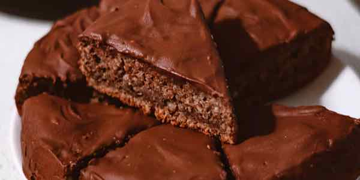
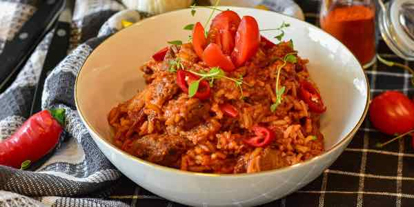
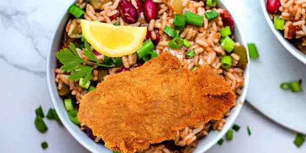
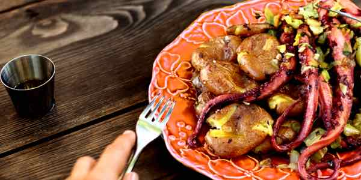
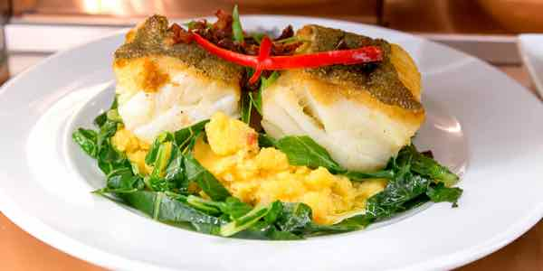
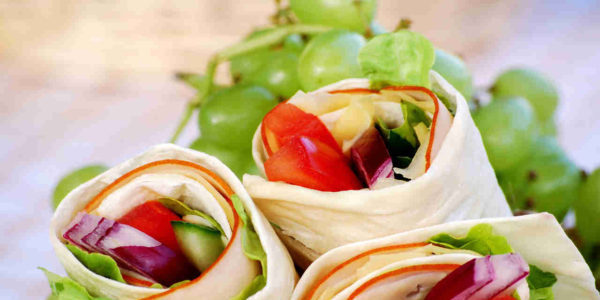

Migas Rústicas Tradicionais
O acompanhamento clássico para carnes grelhadas: migas de couve e broa salteadas em azeite e alho até ficarem tostadas.
Ver Receita
Descubra formas autênticas e práticas de levar os produtos Neutura para a sua cozinha, respeitando a tradição e o sabor.
O acompanhamento clássico para carnes grelhadas: migas de couve e broa salteadas em azeite e alho até ficarem tostadas.
Ver Receita
Uma sobremesa surpreendente e rica. O grão-de-bico Neutura substitui a farinha e garante uma textura húmida e deliciosa.
Ver Receita
O conforto tradicional português: croquetes estaladiços acompanhados por um autêntico arroz de tomate malandrinho.
Ver Receita
Um clássico rápido e irresistível: panados dourados e crocantes com o sabor rico do arroz de feijão vermelho.
Ver Receita
Sabores do mar com azeite virgem e alho: tentáculos tenros e batatinhas a murro assadas no forno.
Ver Receita
O rei da mesa: lombos suculentos que se desfazem em lascas, assados lentamente no forno.
Ver Receita
Uma solução rápida, fresca e versátil. Recheie com os seus produtos favoritos para uma refeição prática e saborosa.
Ver Receita